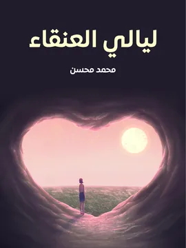

ليالي العنقاء

قراءة عربية أصلية محددة النطاق في الصفحات 9 إلى 14 من ملف PDF المرتبط، وليست تلخيصا كاملا للكتاب. نناقش ما تدعمه هذه المقاطع فقط.
ليالي العنقاء: ترويض التنين
يستهل محمد محسن ديوانه بقصيدة «ترويض التنين» فيقول لمخاطبته: «كوني الوجه المشرق للمرآة»، ويعلن: «أتملاك الصمت القابع في وجهي، والصخب النابض في عيني». وتقول له: «خذني متكأ ما شئت، ولكن روض قلبك كي لا تزعجني، أو فابعدني عن طوفان دماك»، فيجيب: «ضدي أم أنت قريني؟ وكلانا بحر وسفينة»، ويمضي بين ملاك يركبه وشيطان أركبه تتنازعه أمواج متوترة ونيران متواترة، عبر جهاز عصبي آلي تمر فيه موجات الهوى بالعاطفة واللذة، ويسكن الموسيقى «حاملة، هائمة، حاكمة» تستشري في مستويات شعوره، ويسأل: «ألهمني مسرى تقواي، وأشواك فجوري؟». ثم تتبدل النبرة: «ليلة ألف ليلة وليلة، وبعدها تساقط القناع قطعة فقطعة، وصرت في حديقتي شجرية عارية يفح في خوائها الخريف»، بعد ربيع كان دافئًا بلا نهاية وحب كان وسيلة وغاية، ويخاطب العنقاء: «كيف قتلتني أيتها العنقاء؟ أكنت طائرًا بمهجتي؟»، ويتذكر أن «كيشوت» كان فارسًا برغم سيفه الخشب.
زاوية وحدود القراءة
قراءة موجزة من ص ٩ إلى ص ١٤ من أصل ١٠٠ صفحة، تعرض قصيدة «ترويض التنين»، لا الكتاب كاملًا.
الطبعة والقراءة
هذه النسخة من الكتاب صادرة ومتاحة مجانًا بموجب اتفاق قانوني بين مؤسسة هنداوي وأسرة السيد الدكتور محمد محسن.
تنزيل PDF المجاني ↓ القراءة والمصدر الرسمي ↗